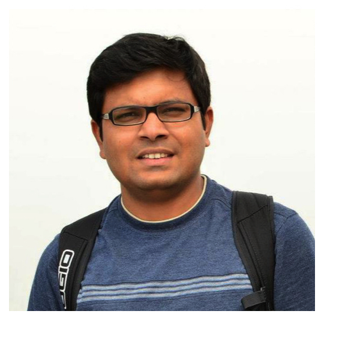

He has more than 14 years of industry experience in the areas of image, audio, video processing, GPU architecture and computer graphics. Currently, He is working at Advanced Computing Lab, Samsung (San Jose, CA) as a GPU Architect.
Selected Publications
On Power-Performance Characterization of Concurrent Throughput Kernels, Nilanjan Goswami,Yuhai Li, Amer Qouneh, Chao Li and, Tao Li, IEEE International Symposium on Workload Characterization (IISWC), October 2015.
GPGPU-MiniBench: Accelerating GPGPU Micro-Architecture Simulation, Zhibin Yu, Lieven Eeckhout, Nilanjan Goswami, Tao Li, Lizy K. John, Hai Jin, Chengzhong Xu, IEEE Transactions on Computers, December 2014.
iConn: A Communication Infrastructure for Heterogeneous Computing Architectures, Zhongqi Li, Nilanjan Goswami, and Tao Li, ACM Journal on Emerging Technologies in Computing Systems, September 2014.
Exploring Silicon Nanophotonics in Throughput Architecture, Nilanjan Goswami, Zhongqi Li, Ramkumar Shankar and Tao Li, IEEE Design and Test Magazine (Silicon Nanophotonics for Future Multicore Architectures Issue), August 2014.
On Characterization of Performance and Energy Efficiency in Heterogeneous HPC Cloud Data Centers, Amer Qouneh, Nilanjan Goswami, Ruijin Zhou, and Tao Li, International Symposium on Modeling, Analysis and Simulation of Computer and Telecommunication Systems (MASCOTS), August 2014.
Software Transactional Memory for GPU Architectures, Yunlong Xu, Rui Wang, Nilanjan Goswami, Tao Li and Depei Qian, International Symposium on Code Generation and Optimization (CGO), February 2014. [Best paper nominee]
Chameleon: Adapting Throughput Server to Time-Varying Green Power Budget Using Online Learning, Nilanjan Goswami, Chao Li, Rui Wang, Xian Li, Tao Li and Depei Qian, International Symposium on Low Power Electronics and Design (ISLPED), September 2013.
Power-performance Co-optimization of Throughput Core Architecture using Resistive Memory, Nilanjan Goswami, Bingyi Cao and Tao Li, IEEE International Symposium on High Performance Computer Architecture (HPCA), February 2013.
Analyzing Soft-Error Vulnerability on GPGPU Microarchitecture, Jingweijia Tan, Nilanjan Goswami, Tao Li, and Xin Fu, IEEE International Symposium on Workload Characterization (IISWC), November 2011.
Exploring GPGPU Workloads: Characterization Methodology, Analysis and Microarchitecture Evaluation Implication, Nilanjan Goswami, Ramkumar Shankar, Madhura Joshi, and, Tao Li, IEEE International Symposium on Workload Characterization (IISWC), December 2010.
Current/Past Affiliations